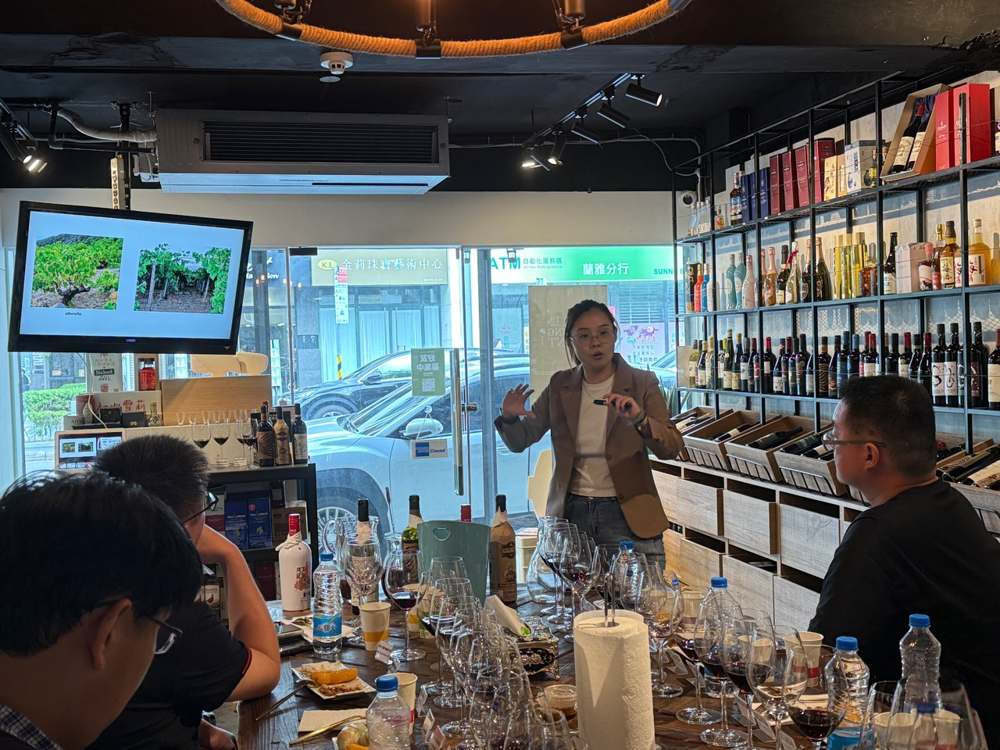
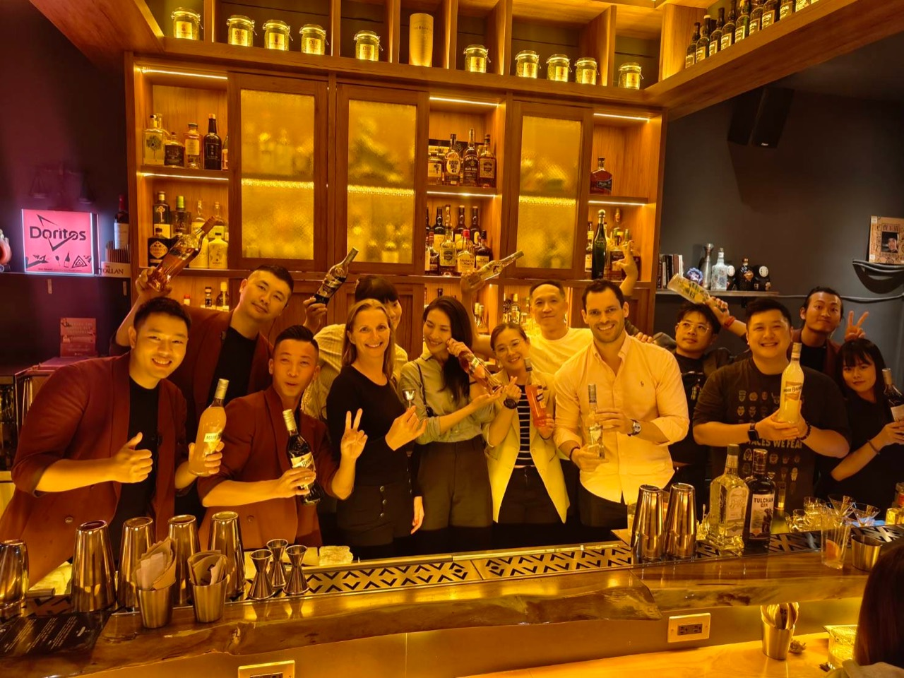
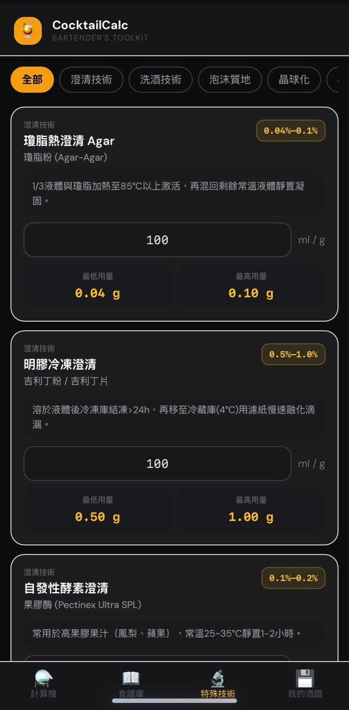
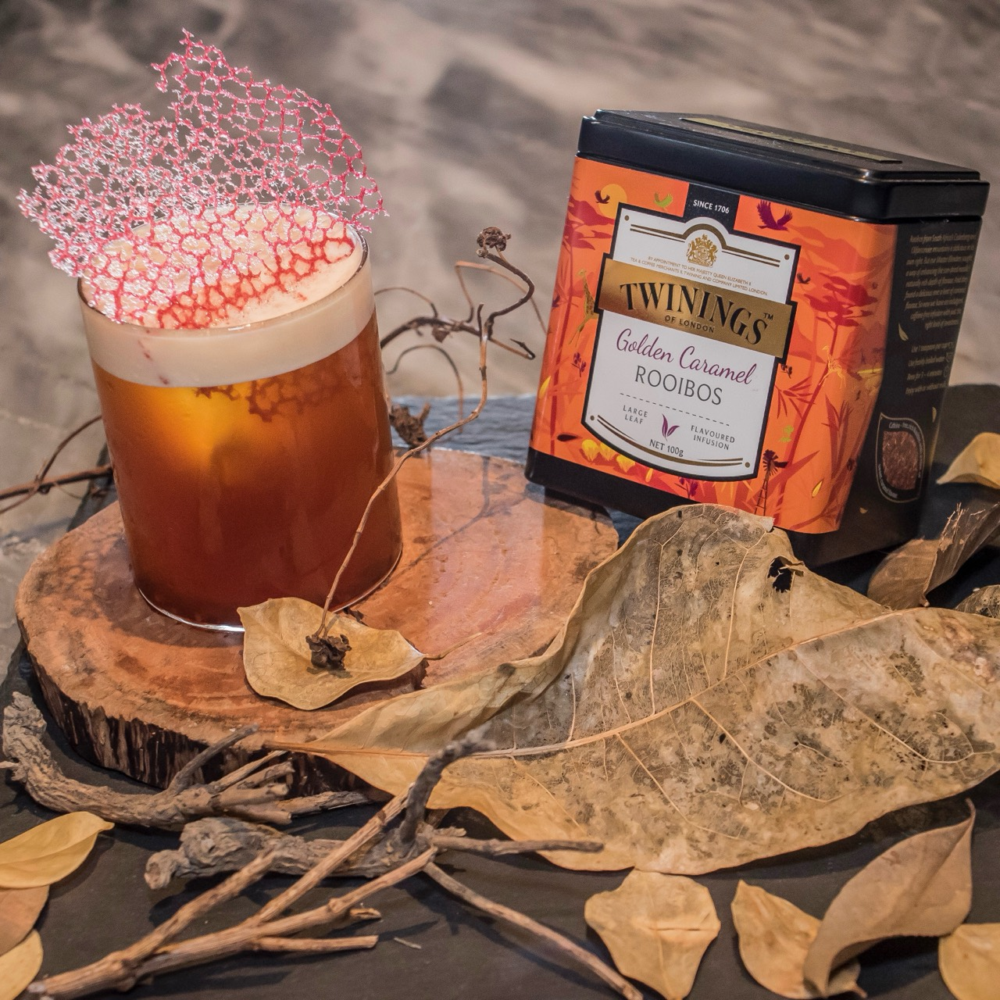
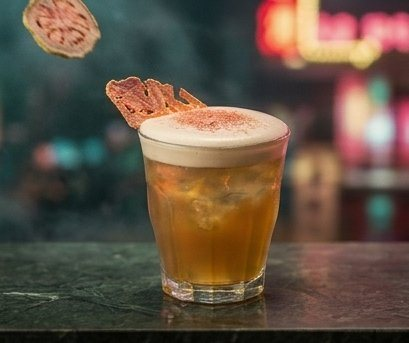
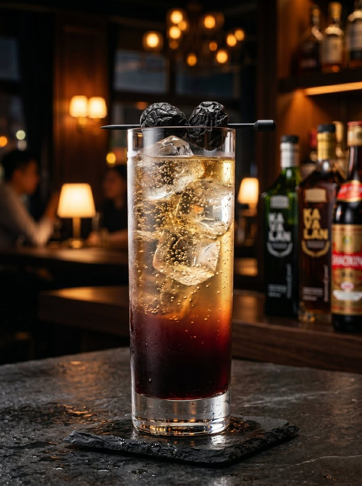
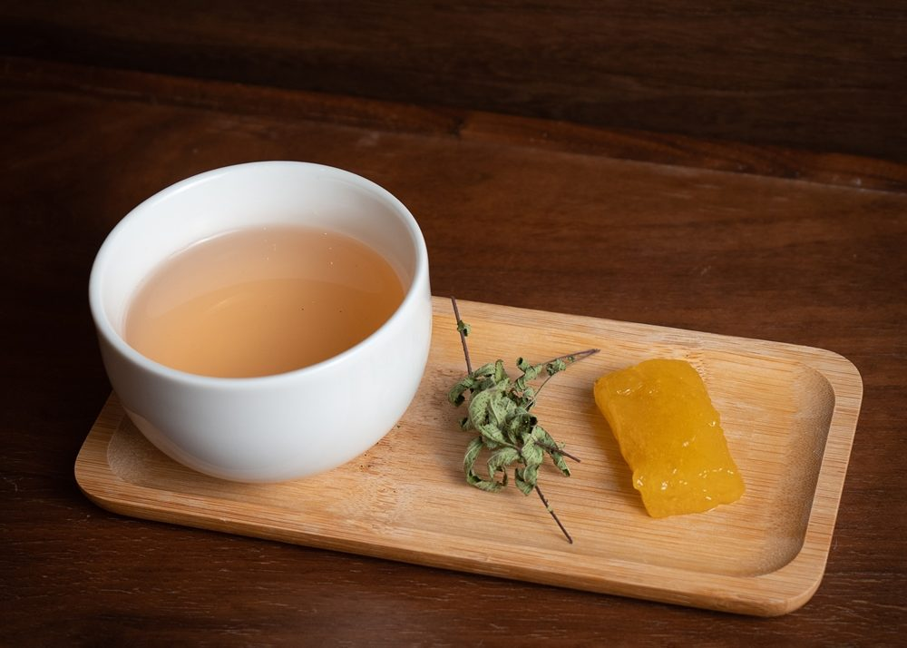
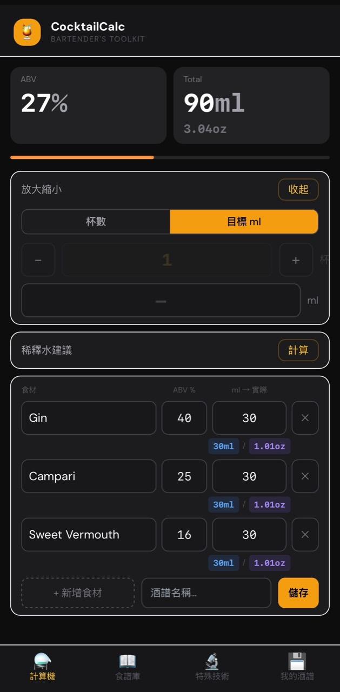
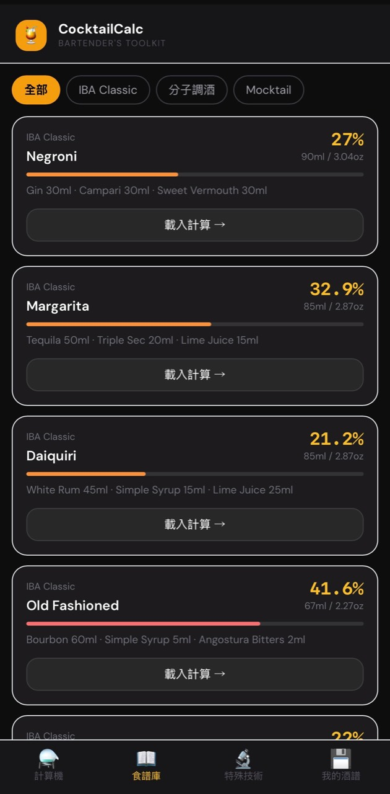

Brand Marketing
品牌推廣與通路合作
負責國際烈酒品牌推廣、餐飲通路經營、行銷活動企劃與專業賽事執行，讓產品從品牌語言轉化為市場可以參與的體驗。
結合調酒研發、品牌教育、通路行銷與數位工具，協助酒類品牌與餐飲場域打造更有故事、更能落地的飲品體驗。
我是 Katrina Wong，擁有飯店 F&B 營運、吧台管理、酒類品牌行銷與飲品研發經驗。我的工作橫跨品牌推廣、通路合作、品酒教育、調酒研發與數位工具建置。

我擅長把酒類產品轉化為可被理解、可被體驗、也能被銷售的飲品故事。從品牌教育、品酒會講授、外國講師口譯，到菜單研發、特殊技法應用與合作提案，我重視風味邏輯，也重視商業現場能否落地。
Professional Focus
品牌推廣與通路合作
負責國際烈酒品牌推廣、餐飲通路經營、行銷活動企劃與專業賽事執行，讓產品從品牌語言轉化為市場可以參與的體驗。
飲品研發與顧問
結合吧台實務、風味設計、成本意識與特殊技法，協助餐飲場域建立可複製、可訓練、可銷售的飲品系統。
品酒講授與雙語支援
擔任品酒會講師，提供產品教育、品飲引導、品牌故事詮釋，並支援外國講師於大師班與訓練場合的口譯溝通。
配方工具與資料庫
建立 Zephyr Mixology 與酒譜資料庫，整理配方計算、批量換算、特殊技法與個人酒譜，讓飲品研發流程更標準化。
Brand Activation

負責 Marie Brizard、Stoli 等國際酒類品牌的通路推廣、客戶溝通、活動企劃與品牌教育，連結產品特色與餐飲現場需求。
Competition & Event

參與 TBS 2026 專業大師班與決賽籌備，整合活動流程、品牌溝通、講師支援、專業內容傳遞與市場推廣。
Education
擔任品酒會講師，提供產品知識、品飲邏輯與調酒應用說明；同時支援外國講師口譯，協助專業內容被清楚傳遞。
Technical Consulting

協助智能調酒設備導入市場，提供技術顧問、合作提案、操作教育與應用情境規劃，讓設備能對接吧台營運需求。
Market Development

開發立飲文化、茶調酒與概念型飲品體驗等新商業場景，探索酒類品牌在不同通路與生活型態中的可能性。

Island Mist
以台灣的山峰、島嶼、雲霧為靈感，用茶葉、百香果、煙燻，呈現台灣在地的風情。
Taiwan's peaks, islands and mist — rendered through tea, passionfruit and smoke.

Night Market Stroll
以夜市水果攤發想，用台灣高山清茶 infuse 的 Rum，搭配澄清紅心芭樂汁與蘋果梅子泡泡，給人一種猶如置身夜市的感受。
Inspired by night-market fruit stalls — high-mountain tea rum, clarified guava, plum foam.
Ursula's Potion
彷彿從童話世界跳出的神奇飲品。蝶豆花帶來藍色魔法，薰衣草飄散迷人香氣，自製發泡錠是讓整杯魔藥神奇變色的關鍵。
A potion from a fairy tale — butterfly-pea blue, lavender aroma, and a fizzing tablet that changes its color.
Wonka's Adventure
以巧克力與探險為主題，融化的巧克力冰磚垂流杯壁，撒上金粉與香料，佐起司餅。像翻開一本冒險故事書，藏著甜美與驚奇。
Chocolate and adventure — a melting chocolate ice block, gold dust and spice, served with a cheese cracker. Like opening a storybook.

Plum Reverie
紹興是台灣廚房常見的調料，以此為發想搭配烏梅，再加上 soda 的汽泡感，清爽開胃，適合餐前飲用。
Shaoxing wine — a kitchen staple — reimagined with preserved plum and soda. Crisp and appetizing.

Kumquat Parlour
Martini 結構的濃香型作品，以澄清小金桔汁、自製烏龍苦精與柑橘鹽水，佐自製桂花金桔羊羹。
A rich martini structure — clarified kumquat, house oolong bitters, citrus brine, with osmanthus-kumquat jelly.

Persimmon Old Fashioned
Old Fashioned 結構，以 Fat wash 手法製作的濃香甜型作品，柿子利口酒搭配地瓜爆米花。
An Old Fashioned built on fat-washing — persimmon liqueur and sweet-potato popcorn.
Digital System · Bartender Toolkit
配方計算、酒譜管理與特殊技法資料庫
Zephyr Mixology 是我為飲品研發與吧台工作流程建立的數位工具，從原始的 CocktailCalc 專案延伸而來，整合配方計算、批量換算、酒譜管理、特殊技法資料庫與個人配方儲存，協助研發流程更標準化、可複製、可管理。


06 — Last Call / Contact
正在尋找品牌教育、飲品顧問
或調酒研發合作？
Available for brand activation, tasting lectures, masterclass support, menu development, and cocktail R&D
katrinawong.wsi@gmail.com